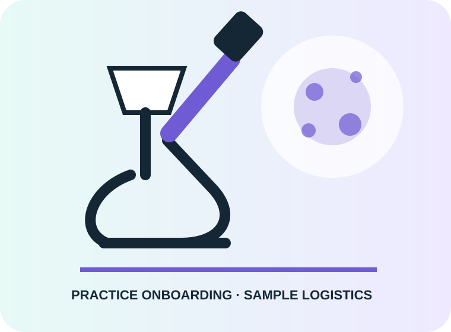

Cytology & histopathology
Verified capability presented with a clear route into the right enquiry workflow.
A calm, clinical concept for client onboarding, discipline selection, forms, supplies, courier support and pathologist access.

Only services supported by the business’s public information are used in this concept.
Verified capability presented with a clear route into the right enquiry workflow.
Verified capability presented with a clear route into the right enquiry workflow.
Verified capability presented with a clear route into the right enquiry workflow.
Verified capability presented with a clear route into the right enquiry workflow.
The site provides deep technical guidance and downloadable submission forms, but the journey is document-led. A practice must navigate several pages to choose a discipline, find sampling advice, obtain forms, arrange supplies or courier support and understand reporting. There is no visible unified practice-onboarding or logistics workflow.
A privacy-conscious veterinary-practice portal journey with onboarding, test/service guidance, courier and supply requests, secure document workflows, CRM organisation and automated status communications. The public demo deliberately avoids collecting patient data.
This public concept collects practice-level requirements only—not patient or clinical data.